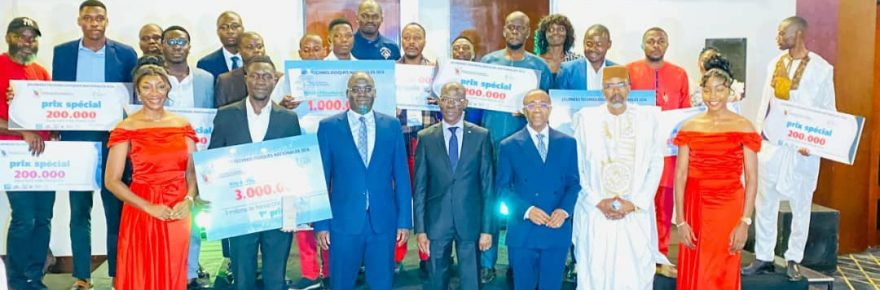
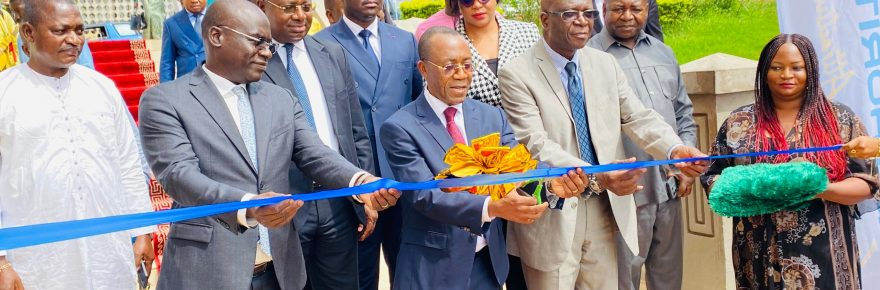

The Minister of Mines, Industry and Technological Development (ai), Prof. FUH CALISTUS GENTRY, presided over the awards ceremony for the winners of this edition. Fifty […]
-

The 9th National Technology Days come to a close
Read more »The Minister of Mines, Industry and Technological Development (ai), Prof. FUH CALISTUS GENTRY, presided over the awards ceremony for the winners of this edition. Fifty young Cameroonian researchers and inventors […]
-

TENTH EDITION OF THE NATIONAL TECHNOLOGY DAYS (JTN)
Read more »The Minister of Mines, Industry and Technological Development (ai), Professor FUH CALISTUS GENTRY, presided over the official opening ceremony this 19th November at the Yaoundé City Hall. Under the theme […]
-
EXAMINATION OF A BILL AT THE NATIONAL ASSEMBLY
Read more »The Minister of Mines, Industry and Technological Development (ai), Pr FUH CALISTUS GENTRY, Government Representative defended the bill authorising the President of the Republic to proceed with Cameroon’s accession to […]
-
Densification of Cameroon’s industrial fabric, Professor Fuh Calistus Gentry on a working visit to the city of Douala
Read more »The purpose of this visit to companies in this sub-sector is not only to reinforce the import-substitution policy put in place by the government, but also to revive this sector as a lever for development.
-
Trademark protection: SMEs and SMIs sensitised
Read more »In collaboration with AIPO and APME, MINMIDT launched this initiative with a view to inform SMEs and SMIs in the agri-food sector on the importance of registering a trademark.
Noms commerciaux – Trade Name


Major Activities
TENTH EDITION OF THE NATIONAL TECHNOLOGY DAYS (JTN)
The Minister of Mines, Industry and Technological Development (ai), Professor FUH CALISTUS GENTRY, presided over the official opening ceremony this 19th November at the Yaoundé […]
EXAMINATION OF A BILL AT THE NATIONAL ASSEMBLY
The Minister of Mines, Industry and Technological Development (ai), Pr FUH CALISTUS GENTRY, Government Representative defended the bill authorising the President of the Republic to […]
Densification of Cameroon’s industrial fabric, Professor Fuh Calistus Gentry on a working visit to the city of Douala
The purpose of this visit to companies in this sub-sector is not only to reinforce the import-substitution policy put in place by the government, but also to revive this sector as a lever for development.
Trademark protection: SMEs and SMIs sensitised
In collaboration with AIPO and APME, MINMIDT launched this initiative with a view to inform SMEs and SMIs in the agri-food sector on the importance of registering a trademark.
Extractive Industries Transparency Initiative in Cameroon REPORT 2019
Cameroon has so far published fourteen (14) EITI Reports covering the period from 2001 to 2018. BDO has been appointed by the EITI Committee as Independent Administrator (IA) for the preparation of the 15th EITI Report covering the year 2019.